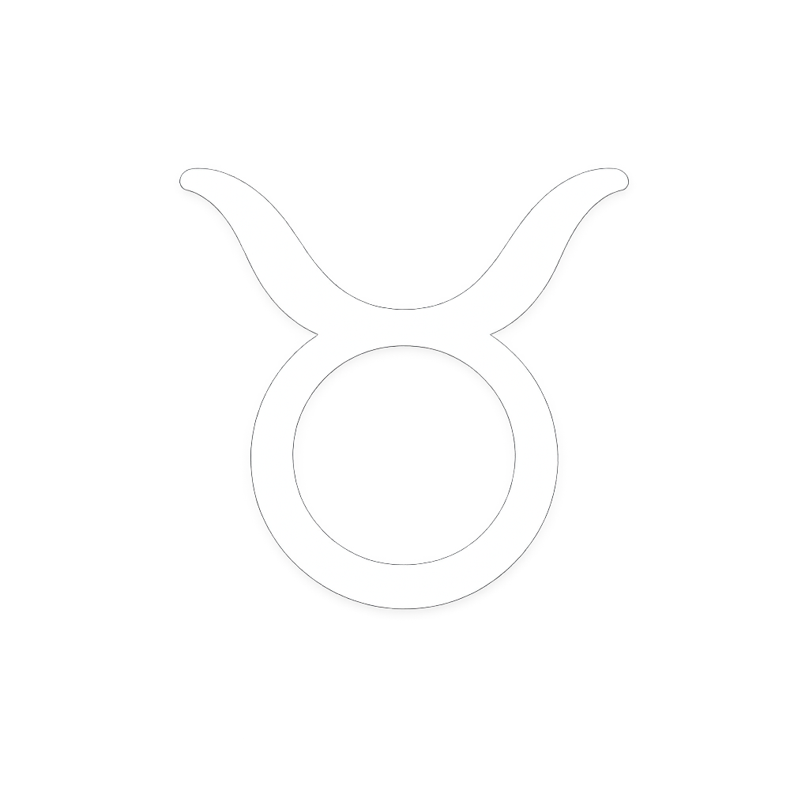

Características
Signo de Terra, regido por Vênus. Focado na estabilidade, no prazer sensorial e na persistência.
Personalidade
Calmo, leal e extremamente teimoso. Valoriza o conforto, a boa comida e a segurança financeira. Se um taurino mudou de ideia, pode anotar no calendário: é um evento raro.
Compatibilidade
Muita harmonia com Virgem e Capricórnio. A paixão costuma ser forte com Escorpião.
Curiosidades
Touro é o signo mais sensorial. Eles têm um olfato e um tato muito apurados; o ambiente precisa "parecer" e "cheirar" bem.